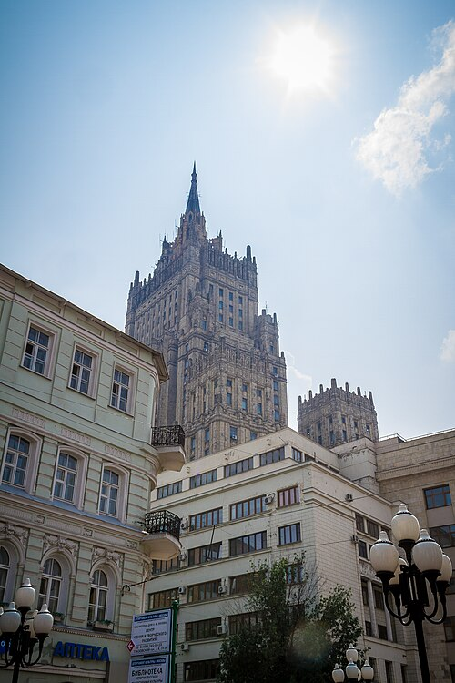

Arbat Street
Arbat Street is located in the centre of Moscow, just west of the Kremlin. It is a famous pedestrian street full of souvenir shops, cosy cafes, art galleries and bookstores. Here you can walk among old colourful buildings, listen to street musicians, watch artists painting portraits and buy traditional Russian gifts. In the evening the street becomes lively, so it is a perfect place to relax and enjoy the atmosphere.